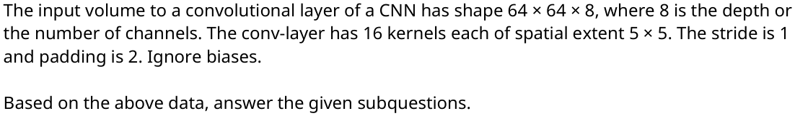
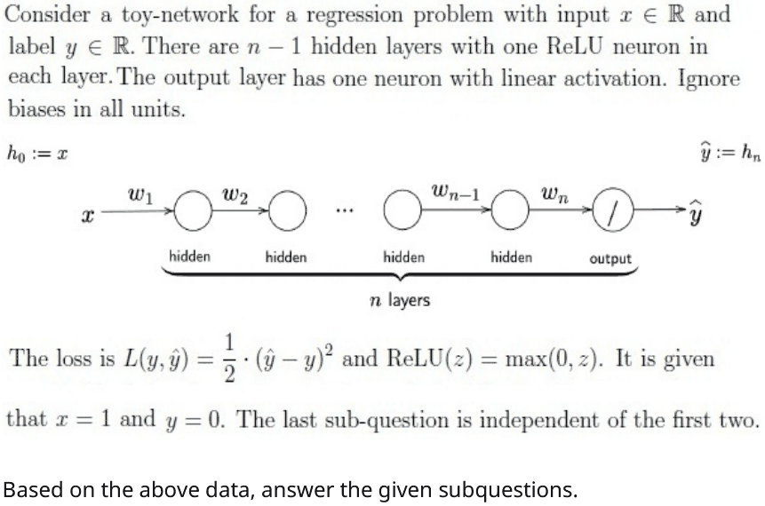
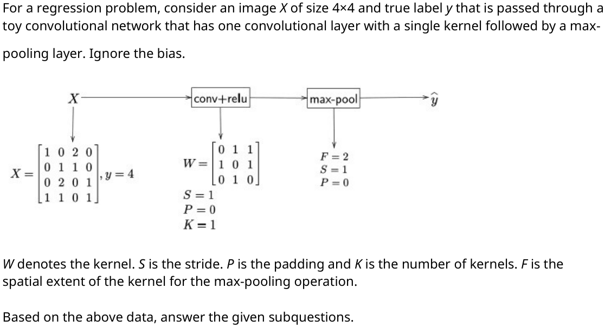

Deep Learning Quiz 2 · 2025 Term 2 — Study guide
- Time budget: ≈ 1 min per mark. Shape/parameter questions ≈ 1 min each once you have the formula; numeric optimiser traces ≈ 3 min.
- Answer-sheet marks: ✓ = recomputed by code and inside the official range · • = official key, explained by reasoning (concept question, not machine-checked).
- Order of attack: write the formula once, fill a small table, then read off the answers.
Q1–Q2Diagnosing training curves; adaptive optimisers6 marks
Lesson · Bias–variance & regularisation
Diagnosing from curves
| picture | diagnosis | cure |
|---|---|---|
| train ↓, val ≈ train, both low | good fit (low bias, low variance) | — |
| train ↓↓, val turns ↑ | overfitting = low bias, high variance | more data, L2, dropout, early stopping, augmentation |
| both plateau high | underfitting = high bias | bigger model, polynomial features, longer training |
| loss increases with epochs | learning rate too high | lower η |
- Bias² = (mean prediction − truth)²; Variance = mean (prediction − mean prediction)² over models trained on different samples. Test error ≈ bias² + variance + noise.
- More training data: variance falls, bias stays about the same (it is set by model capacity).
- Choosing λ: the value with the lowest validation loss (not training loss).
- Adding L2/L1 to an under-fitting model makes it worse; the fix is more capacity (extra hidden layers with non-linearity, polynomial features). A deep net without non-linearity is still linear.
Regularisers in one table
| technique | what it does |
|---|---|
| L2 (λ/2‖w‖²) | penalty ∝ w² ⇒ weight decay: w ← (1−ηλ)w − η∇L; minimiser w* = w_D*/(1+λ) for a symmetric quadratic. Loss with penalty ≥ plain loss. |
| L1 (λ‖w‖₁) | penalty ∝ |w| ⇒ sparse weights / feature selection |
| Dropout (keep p) | training: each unit kept with prob p, E[active] = n·p, 2ⁿ thinned sub-networks. Test: all units on, outputs scaled by p (or inverted-dropout: scale by 1/p in training). Per-layer p may differ; sparsity of weights is not implied. |
| Early stopping | stop when validation error stops decreasing and starts to rise |
| Data augmentation / noise at input / soft targets at output | soft target e.g. 0.9 / 0.025…: a probabilistic (non-0/1) label |
| Bagging k models | mse = V/k + (k−1)C/k. C = V (identical models) gives V; C = 0 gives V/k; minimum at C = −V (for k = 2); k→∞ limit is C. |
Not regularisers: activation functions, optimiser choice (Adam vs SGD).
Lesson · Optimisers & learning-rate schedules
Update rules (g = ∇w, η = learning rate)
| method | state | update |
|---|---|---|
| Momentum | u = γu + η g | w ← w − u |
| NAG | same, gradient taken at the look-ahead point w − γu | fewer oscillations than momentum |
| AdaGrad | v = v + g² | w ← w − η g / (√v + ε) |
| RMSProp | v = βv + (1−β) g² | w ← w − η g / (√v + ε) |
| AdaDelta | v = βv+(1−β)g²; u = βu+(1−β)Δw² | Δw = −(√u/√v) g — no η at all |
| Adam | m = β₁m+(1−β₁)g; v = β₂v+(1−β₂)g² | w ← w − η m̂/(√v̂+ε), m̂ = m/(1−β₁ᵗ), v̂ = v/(1−β₂ᵗ) |
| AdaMax | Adam with the L∞ norm: u = max(β₂u, |g|) | w ← w − η m̂ / u |
| NAdam | Adam + Nesterov look-ahead |
Facts the paper keeps asking
- AdaGrad: v only grows ⇒ effective LR η/√v is monotonically non-increasing (can stay constant while g = 0). Sparse features have small accumulated v ⇒ their LR decays slowly; dense features decay fast.
- RMSProp: v can shrink (old gradients are forgotten) ⇒ effective LR can rise; it is not guaranteed non-increasing. It can still oscillate around the minimum because the LR does not vanish; sensitive to η₀.
- Adam = momentum + RMSProp. Without bias correction m, v start at 0 and are underestimated; since √v shrinks faster than m, the first steps are too large (m/√v ≈ 0.1 g / 0.0316|g| ≈ 3.2 for β=(0.9, 0.999)).
- Adaptive per-parameter LR: AdaGrad, RMSProp, AdaDelta, Adam, NAdam. Not adaptive: SGD, momentum, NAG (a single global η, even with decay schedules).
- Oscillation around the minimum: momentum, NAG (less), RMSProp, Adam. AdaGrad does not oscillate — it stalls instead.
Learning-rate schedules
- Step / exponential decay: global η shrinks on a schedule — still not adaptive per parameter.
- Cosine annealing with warm restarts: η follows a half-cosine down, then jumps back up; the periodic large η helps escape sharp minima.
- Cyclical triangular: η_t = η_min + (η_max−η_min)·max(0, 1 − |t/μ − 2⌊1 + t/2μ⌋ + 1|). Minimum at t = 0, 2μ, 4μ…, peak at μ, 3μ… Period = 2μ.
- Backtracking line search: shrink η until the sufficient-decrease condition J(w−ηg) ≤ J(w) − c·η‖g‖² holds — take the largest η that passes.
Speed recipe for numeric traces
- Write the update rule once; list t, g, state, new w in a table.
- Check the indexing convention: the passage often starts at t = 0 with v₋₁ = 0, so "after iteration 1" may mean w₁ and v₁ computed with the new gradient.
- Keep 3 decimals in intermediate values, as the paper says.
Question data
Worked solution
Q1 · Match loss curves to diagnoses
| curve | reading | statement |
|---|---|---|
| M₁ | both curves fall together, small gap | (C) low bias, low variance |
| M₂ | loss increases | (A) learning rate too high |
| M₃ | train ↓, validation ↑ | (B) low bias, high variance |
| M₄ | both plateau high | (D) high bias, low variance |
Pairing M₁→C, M₂→A, M₃→B, M₄→D = option A.
Q2 · Adaptive learning rate
Adam and RMSProp adapt η per parameter. Momentum and NAG use one global η (A, B).
Answer sheet
| Q | asks for | answer | key | why / how |
|---|---|---|---|---|
| Q1 | pair models with statements | A | • | M1→C, M2→A, M3→B, M4→D |
| Q2 | optimisers with adaptive LR | AB | • | Adam, RMSProp |
Q3–Q4Counting parameters · tied autoencoder; soft-target cross-entropy6 marks
Question data
Worked solution
Q3 · Autoencoder, hidden = 30 % of input (m inputs, 0.3m hidden)
tied: W₂ = W₁ᵀ ⇒ only W₁ is stored = 0.3m² parameters
n₁ / n₂ = 0.6m² / 0.3m² = 2 (e.g. m=10: 60/30)
Q4 · Cross-entropy with the soft target
Answer sheet
| Q | asks for | answer | key | why / how |
|---|---|---|---|---|
| Q3 | n₁/n₂ for untied vs tied autoencoder | 2 | ✓ | 0.6m² / 0.3m² |
| Q4 | cross-entropy with soft label | 0.69 | ✓ | 0.9 ln0.6 + 0.1 ln0.1 |
Q5–Q7Conv layer shape and parameters9 marks
Lesson · CNN arithmetic: shapes, parameters, Inception
output depth = K (number of filters)
conv params = F·F·C_in·K (+ K biases only if the paper says so)
pool params = 0 FC params = n_in·n_out
“same” padding (S=1): P = (F−1)/2 → 7×7 needs P = 3
- Parameters do not depend on input width/height, stride or padding — only on kernel size, input depth and number of filters. A bigger image changes the feature-map volume, not the weights.
- Feature-map volume = W × H × D of the output tensor (not params!).
- Max-pool 2×2, stride 2 halves each side (floor). Average-pool outputs the mean of each window.
- Conv vs FC: FC on an n-pixel image with m neurons costs n·m weights; a small conv layer is far cheaper because weights are shared.
Inception module bookkeeping
- Four parallel branches see the same input; each branch's output has the same H×W (padding chosen so), depths add: concatenated depth = Σ branch depths.
- 1×1 “reduction” convs shrink depth before the expensive 3×3 / 5×5 — compare 3×3 on 256 channels (9·256·K) with 1×1 first (256·r + 9·r·K).
- Max-pool branch: 3×3, stride 1, padding 1 keeps H×W and depth; its params are 0; the following 1×1 conv does the work.
- For total params: do the branches one by one in a table (input depth, F, K, params) and add.
ResNet
A skip connection adds the layer input to its output element-wise: y = F(x) + x. Gradients flow through the identity path, easing vanishing gradients in very deep nets.
Question data

Worked solution
Shape
params = 5·5·8·16 = 3200
input 128×128×8: params still 3200 — they depend on kernel, input depth and K only (D)
Answer sheet
| Q | asks for | answer | key | why / how |
|---|---|---|---|---|
| Q5 | output shape (A: 64×64×16) | A | ✓ | (64−5+4)/1+1 = 64 |
| Q6 | parameters of the layer | 3200 | ✓ | 5·5·8·16 |
| Q7 | bigger input changes params? (D: No) | D | ✓ | weights are shared across positions |
Q8–Q10L2 regularisation on a quadratic loss9 marks
Question data

Worked solution
Derivation
∂L/∂wᵢ = 2(wᵢ−1) + λwᵢ = 0 ⇒ wᵢ* = 2/(2+λ)
- Q8: w_D* = (1,1) (A).
- Q9: 2/(2+λ) = 0.5 ⇒ λ = 2.
- Q10: ‖w*‖ = 2√2/(2+λ) < √2 = ‖w_D*‖ for every λ > 0 — regularisation only shrinks the norm ⇒ No such λ (D).
Answer sheet
| Q | asks for | answer | key | why / how |
|---|---|---|---|---|
| Q8 | w_D* (unregularised minimiser) | A (1, 1) | ✓ | L_D = (w₁−1)² + (w₂−1)² |
| Q9 | λ for w* = (0.5, 0.5) | 2 | ✓ | 2/(2+λ) = 0.5 |
| Q10 | any λ>0 with ‖w*‖ > ‖w_D*‖? (D: No) | D | ✓ | L2 only shrinks |
Q11–Q13Chain of ReLU neurons · products of weights10 marks
Lesson · Backprop through conv, pooling & small nets
Gradient routing rules
- Linear/sum (ŷ = Σ elements): gradient 1 to every element.
- Max-pool: the whole gradient goes to the argmax element of each window; all others get 0 (if the max is in another window cell, the answer for “H₀₀” is 0, not 1).
- Average-pool (k×k): every element of the window gets 1/k² of the upstream gradient.
- ReLU: pass the gradient where the pre-activation > 0, block it elsewhere. Sigmoid: multiply by σ′ = σ(1−σ).
- Conv weight w_ab: ∂L/∂w_ab = Σ over output cells (i,j) of (∂L/∂o_ij)·(active?)·X[i+a, j+b]. Weights that only ever meet zero pixels (or dead ReLU cells) get gradient 0.
- Chain of weights ŷ = ∏ wᵢ·x ⇒ ∂ŷ/∂w₁ = ŷ / w₁ and ∂L/∂w₁ = (ŷ − y)·∂ŷ/∂w₁ (check ReLU alive).
Squared / cross-entropy loss recipes
- L = ½(ŷ − y)² ⇒ ∂L/∂ŷ = ŷ − y. L = (ŷ−y)² ⇒ 2(ŷ−y).
- Softmax + cross-entropy: ∂L/∂z = ŷ − y. Cross-entropy with a soft label: L = −Σ y_noise,i · ln ŷ_i.
- SGD step: w ← w − η ∂L/∂w. L2 term adds λw to the gradient (weight decay).
- Plan: forward pass table (pre-activation a, activation h) → backward pass multiplying local derivatives right-to-left. Always keep the indicator 𝟙(a > 0) from the forward pass.
Convolution naming trap
The course (and frameworks) compute “convolution” as cross-correlation — slide the kernel as printed, no flipping. All traces below use that convention and reproduce the official keys.
Question data

Worked solution
Toy network: x → w₁ → ReLU → w₂ → ReLU … → wₙ (linear), x = 1, y = 0
with every w_i = k > 0 all pre-activations are positive ⇒ ŷ = kⁿ (Q11, A)
Check n=4, k=1.5: ŷ = 5.0625; ∂ŷ/∂w₁ = 3.375; ∂L/∂w₁ = 17.0859.
Q13: ŷ = 0 with every wᵢ ≠ 0 means the ReLU chain was cut: some hidden pre-activation was negative, which needs a negative weight among w₁…wₙ₋₁ (the last layer is linear). Option A.
Answer sheet
| Q | asks for | answer | key | why / how |
|---|---|---|---|---|
| Q11 | ŷ when all weights equal k | A | ✓ | product of the weights: kⁿ |
| Q12 | ∂L/∂w₁ at w = (k,…,k) | A | ✓ | ŷ·kⁿ⁻¹ = k²ⁿ⁻¹ |
| Q13 | ŷ=0 with all wᵢ≠0 | A | • | some earlier weight must be negative (A) |
Q14–Q16Toy CNN · conv+ReLU → max-pool, gradient to a kernel weight10 marks
Question data

Worked solution
Sliding-window convolution — output 2×2 = ⌊(4−3)/1⌋+1
| 1 | 0 | 2 | 0 |
| 0 | 1 | 1 | 0 |
| 0 | 2 | 0 | 1 |
| 1 | 1 | 0 | 1 |
| 1 | 0 | 2 | 0 |
| 0 | 1 | 1 | 0 |
| 0 | 2 | 0 | 1 |
| 1 | 1 | 0 | 1 |
| 1 | 0 | 2 | 0 |
| 0 | 1 | 1 | 0 |
| 0 | 2 | 0 | 1 |
| 1 | 1 | 0 | 1 |
| 1 | 0 | 2 | 0 |
| 0 | 1 | 1 | 0 |
| 0 | 2 | 0 | 1 |
| 1 | 1 | 0 | 1 |
| 5 | 3 |
| 3 | 4 |
Q15 · Max-pool F=2, S=1 over the 2×2 map
One window ⇒ ŷ = max = 5.
Q16 · ∂L/∂W₁₃ (L = ½(ŷ − y)², y = 4)
∂L/∂ŷ = 5 − 4 = 1. Max-pool routes it to the cell holding 5 = conv output at window (0,0). ∂o/∂W₁₃ = X[0][2] = 2 ⇒ ∂L/∂W₁₃ = 1·2 = 2.
Answer sheet
| Q | asks for | answer | key | why / how |
|---|---|---|---|---|
| Q14 | conv + ReLU output (A: [[5,3],[3,4]]) | A | ✓ | four window sums |
| Q15 | ŷ after max-pool | 5 | ✓ | max of the map |
| Q16 | ∂L/∂W₁₃ | 2 | ✓ | (ŷ−y)·X₀₂ |